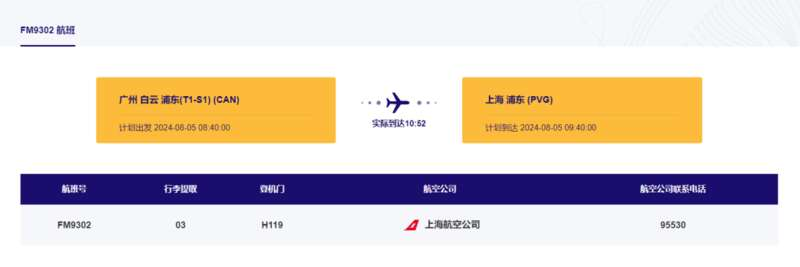

8月5日，有网友爆料称，坐摆渡车上飞机时，有人向飞机扔硬币。“幸好地勤人员发现并报警……吓得人心脏受不了。”此事引发关注。
视频显示，在飞机登机扶梯处，停放着一辆警车，现场有身穿公安制服的工作人员与身穿“航服”荧光马甲的工作人员。视频定位为广州白云国际机场。
视频发布者称，“好像是对着发动机丢，没有对准，反弹后掉到地上被机场地勤人员发现后报警处理，搞得飞机停下来检查了快一个小时才起飞。人被带走了。”
此前，该网友晒出的机票信息显示，他是8月5日由广州飞往沙特利雅得，8月5日上午7点30分，搭乘FM9302航班由广州白云机场出发，9点40到达上海浦东机场，中转后12点20分搭乘MU269航班前往利雅得。
8月6日，潇湘晨报记者查询上海机场官网，显示FM9302航班计划到达时间是8月5日9点40分，实际到达时间为10点52分。MU269的离港时间为12点20分，实际出发为12点52分。

潇湘晨报记者联系到东方航空客服电话获悉，FM9302计划起飞时间是8月5日7点30分，实际起飞时间8月5日8点58分，计划到达时间9点40分，实际到达时间为10点52分。该公司一名客服人员告诉潇湘晨报记者，这趟航班延误的理由为“公司原因”，没有显示飞机型号有发生变化。“公司原因包括飞机维修之类的”。
此后，另一位客服人员告诉记者，MU269属于正常起飞，没有发生延误。
潇湘晨报记者向广州白云机场求证此事，工作人员表示暂未收到航司和公安机关关于此事的反馈。
此后，记者多次向机场警务室及广州白云国际机场公安局求证此事，未获得有效回应。
Advertisements